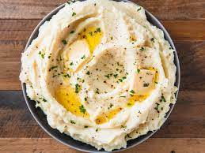

Mashed Potatoes

Mrs. Odin's Silky Smooth Mashed Potatoes
Mrs. Odin's mashed potatoes are the perfect creamy, garlicky, savoury mashed poatoes you are looking for.
Gaurunteed to leave your mouth watering!
ingredients
1 pound golden potatoes
1 pound fresh butter
6 cloves garlic
1 cup sour cream
1/2 cup heavy whipping cream
1 tsp salt
1 tsp black pepper
Step-by-Step
Boil potatoes until soft with fork.
Remove potatoes from water and let cool.
Remove skin from potatoes when able.
Mash potatoes with potatoe masher or fork (or hands).
Combine remaining ingredients in bowl and mix well.
Serve!